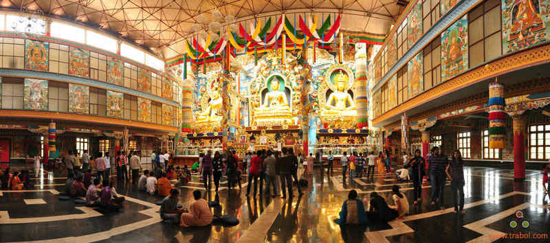

Madikeri is a hill station town in Karnataka state, India. Also known as Mercara, it is the headquarters of the district of Kodagu (also called Coorg). It is a popular tourist destination Madikeri features a tropical highland climate as it has an elevation of 1170 metres (3838 feet). Madikeri is located at 12.42°N 75.73°E.[5][6] Madikeri lies in the Western Ghats and is a popular hill station. The nearest cities are Mangalore to the west, and Mysore to the east. The mean daily minimum temperature is lowest in January at about 11 °C.Maximum temperature in summer is around 24 °C to 27 °C.[7] With the onset of the south-west monsoon, the temperature decreases in June and the weather becomes chilly.The lowest temperature recorded is 4.5 °C. .
The history of Madikeri is related to the history of Kodagu. From the 2nd to the 6th century AD, the northern part of Kodagu was ruled by Kadambas. The southern part of Kodagu was ruled by Gangas from the 4th to the 11th century. After defeating the Gangas in the 11th century, Cholas became the rulers of Kodagu. In the 12th century, the Cholas lost Kodagu to the Hoysalas. Kodagu fell to the Vijayanagar kings in the 14th century. After their fall, the local chieftains like Karnambahu (Palegars) started ruling their areas directly. They were defeated by Haleri Dynasty founder Veeraraju, (Nephew of Ikkeri Sadashiva Nayaka who were descendants of Talakadu Ganga Dynasty), and his father in-law Bomma Gowda, the Seeme Gowda of Haleri kings. In the year 1700AD Ikkeri Somashekara Nayaka gifted Puttur and Amara Sullia Magnes of Tulunadu to Haleri Kings. Descendants of Veeraraju who are known as "Haleri Dynasty" ruled Kodagu from 1600-1834 AD. Haleri king Mudduraja built the Fort in Madikeri and made it[2]as their capital. Mudduraja, the third Haleri king started leveling the land around Madikeri and built a fort in the year 1681. Madikeri Fortwhich was original built of mud and was replaced by Tipu Sultan. Kodagu became the part of British India after 1834 AD.[3]